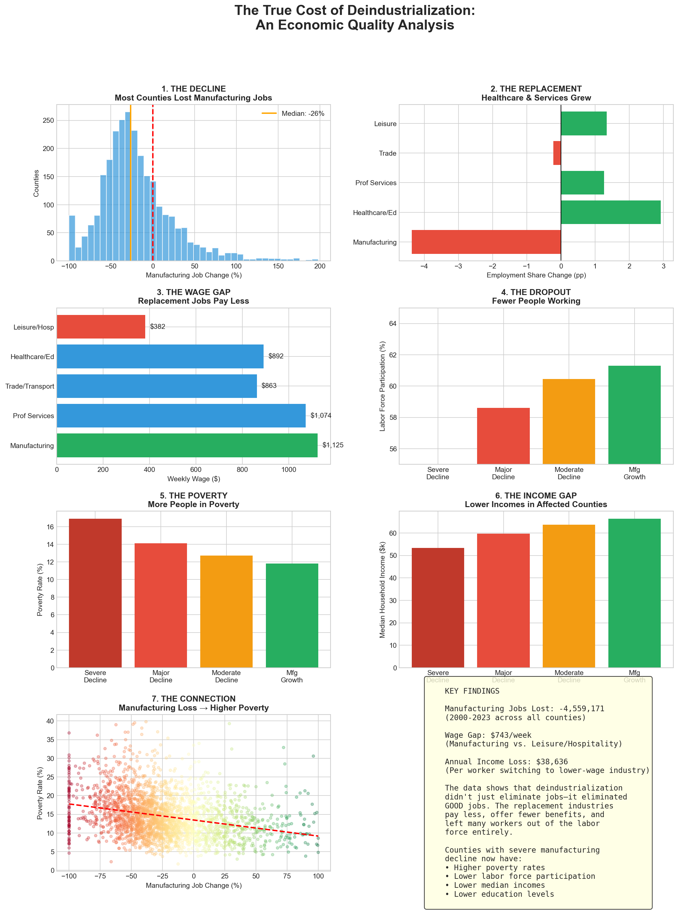

The Complete Story
From decline to replacement to economic distress - how deindustrialization reshaped America's counties.
1
The Decline
Manufacturing jobs disappeared from most U.S. counties between 2000-2023.
2
The Replacement
Healthcare, services, and leisure jobs partially filled the gap.
3
The Wage Gap
But replacement jobs pay significantly less than manufacturing.
4
The Fallout
Lower incomes, higher poverty, workers leaving the labor force.
